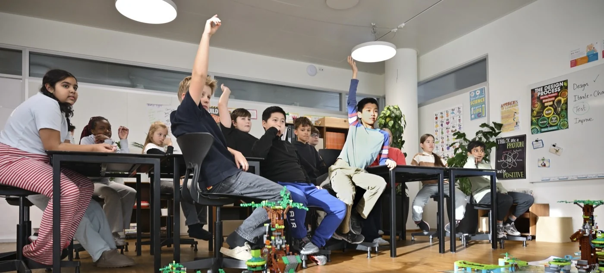
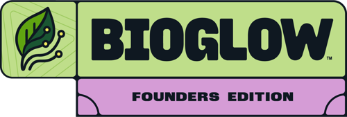
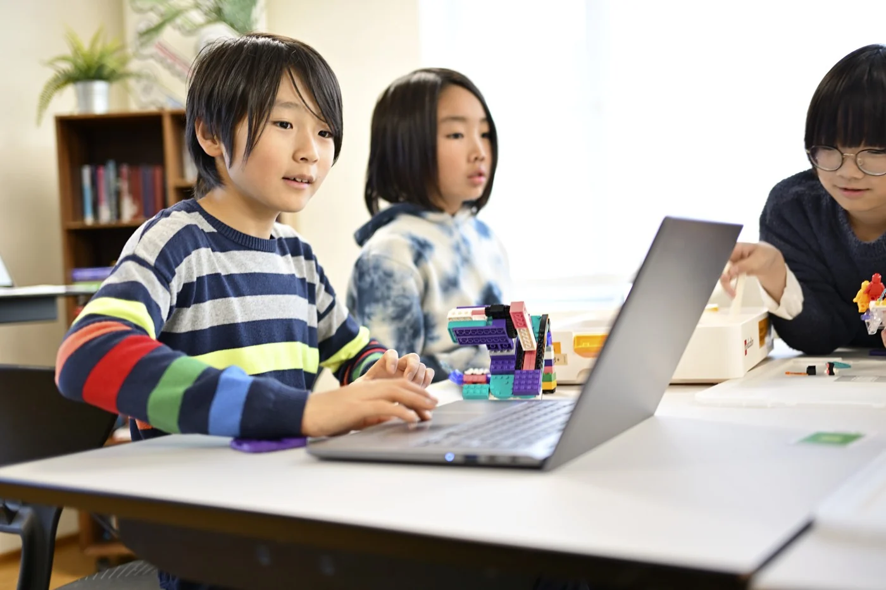
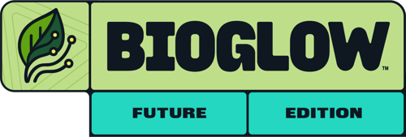
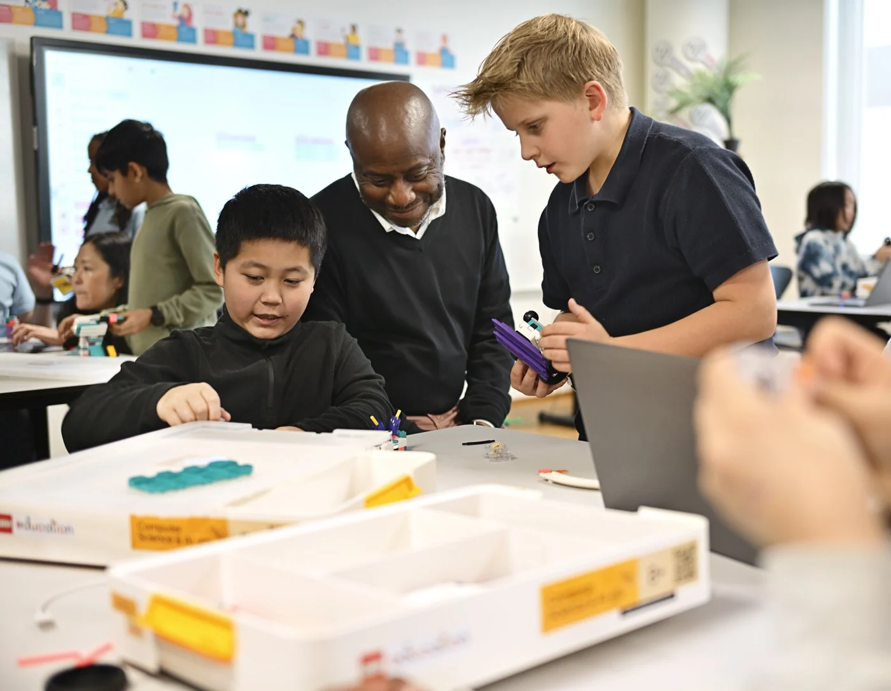

Founders Edition
Para escolas que querem continuar a construir e a programar com LEGO® Education SPIKE™. Os percursos Explore e Challenge põem as equipas a resolver problemas em conjunto.


Participação
O equipamento da escola é um bom ponto de partida. Em qualquer das edições, as equipas têm acesso à Final Nacional e os professores recebem formação e um guia para as sessões.


Para escolas que querem continuar a construir e a programar com LEGO® Education SPIKE™. Os percursos Explore e Challenge põem as equipas a resolver problemas em conjunto.


Com LEGO® Education Computer Science & AI, a turma explora programação e inteligência artificial através da construção. Há percursos para os 5–7 e os 8–16 anos.
Apoio ao professor

Sim. A mesma escola ou agrupamento pode inscrever várias equipas. A taxa de participação varia com a ordem de inscrição das equipas.
Ver taxas por equipa→As sessões têm um guia para o professor. A Fundação da Juventude acompanha a escola e disponibiliza os materiais de apoio. A formação inclui 10 sessões de 45 minutos para o percurso dos 5–7 anos e 15 sessões de 45 minutos para o dos 8–16 anos.
Indica à Fundação da Juventude o material disponível e os percursos que te interessam. A equipa ajuda a preparar a participação.
Falar com a Fundação→Early bird até 15 de novembro de 2026.